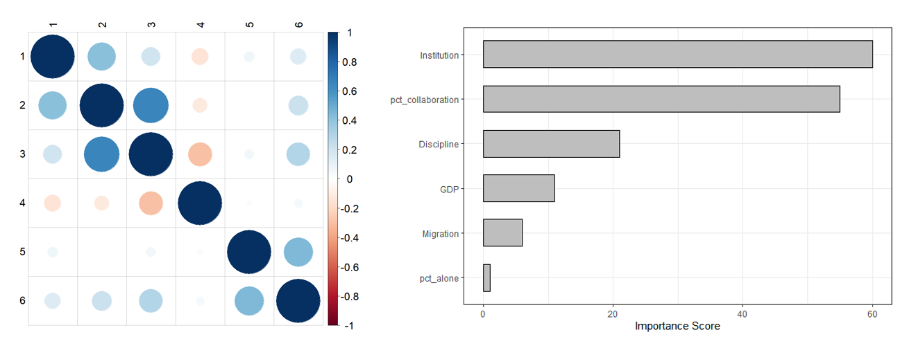

A Serbian academic migrant is a person who authored a publication as a member of a Serbian institution but then published another in affiliation with a foreign institution. To identify as many scientists as possible, we adopt a loose definition of “publication” to include peer-reviewed papers, non-peer-reviewed papers, and conference proceedings. Despite the broad definition, the number of researchers is underestimated - it does not include Serbian students and early-stage researchers who left the country without publishing a paper or Serbian-born researchers who completed their education abroad and were never affiliated with a Serbian university. Another limitation of this approach has to do with the nature of research in different sciences. We are much more likely to identify academics in high-publishing fields, like biology, than those in low-publishing fields, such as philosophy or mathematics, just because there is a higher chance that the high-publishing author will be listed in the web libraries.
Data
The data was collected through Microsoft Academic API - a web search engine for academic publications. By tracking individual authors over time, we were able to identify migrants, track their publishing records, and analyze their coauthors to determine how migration impacts the Serbian research industry. Microsoft Academic has eighteen attributes that can be used to search the database. Most important include paper title, paper ID, year of publication, citation count, authors’ names, IDs, affiliations, as well as attributes relating to journal and field of study. The author’s ID was a more reliable identifier than the author’s name. Relying on name proved to be technically challenging since different journals display different variations of the same name, especially with letters unique to the Serbian alphabet. The advances in machine learning techniques have not yet reached sufficient accuracy to look for scientists by name. Ideally, we should be able to identify Serbian researchers by name, regardless of their affiliation. The inadequacy of major research libraries and the national ambiguity of South Slavic names makes this approach technically intractable. For this reason, we define an academic more narrowly and focus only on those we can identify within the database.
Results
We found a total of 11,372 researchers with Serbian affiliation for the period from 2000 to 2020. Of that number, 977, or 8.6%, were identified as migrants. As one might expect, Serbian academics are emigrating to rich countries with strong educational and research institutions. Out of 977 who emigrated, we identified only 68 (7%) who coauthored a paper with a Serbian researcher back home. Investigating why 93% of academics do not publish with their former colleagues is beyond the scope of this study. We suggest conducting a survey to explore this problem further.
The second research question of this project was to investigate whether academic migrants publish more than researchers in Serbia. When controlled for academic age, Serbian migrants annually publish 2.3 papers more than their Serbian counterparts. Based on this number alone, it might be inferred that the act of leaving the country increases the individual, and consequentially global research output. However, other factors might contribute to this difference. To identify these factors, we trained a random forest model. A random forest is a machine learning method that utilizes a collection of decision trees to classify random variables. One advantage of this model is that it can be used to rank the importance of variables. Variables with higher importance explain a larger percentage of variance in the data compared to the variables with low importance.

The results indicate that the best predictor of scientific productivity is the quality of the research institution (measured by the average number of papers per person). This result is not surprising. Good research institutions have better access to research funds and facilities, along with a more extensive network of scientific collaborators. The Migration variable’s low importance indicates that the act of migrating does not lead to higher productivity unless a researcher “upgrades” to a more productive institution.
Finally, there is a statistically significant increase in the publishing record of domestic scientists who collaborate with foreign scientists. On average, more collaborative authors publish 1.9 papers per year more than less collaborative authors. There are two takeaways from these results. First, the loss of productivity of the Serbian academia caused by emigration could be partially offset by boosting international collaborations. Second, a researcher’s productivity is highly correlated with the productivity of the institution. Even modest improvements in the research environment, coupled with sincere efforts to improve collaborations, could lead to positive externalities for the entire research community.
Recommendations
The results suggest that scientific productivity is, among others, influenced by three factors: the quality of an institution, the size of emigration and the extent of international scientific collaborations. Institutionally, the rate of publishing from 2012 onwards is slowing down, and even declining in some disciplines. The first recommendation is to investigate the reasons behind this slowdown. Emigration is a country-wide problem, not specific to the scientific community. Out of these three factors, improving collaborations seem like the most realistic goal. To that end, we propose a survey that would analyze why only 7% of the Serbian migrants collaborated with their former colleagues, and how that number can be increased.